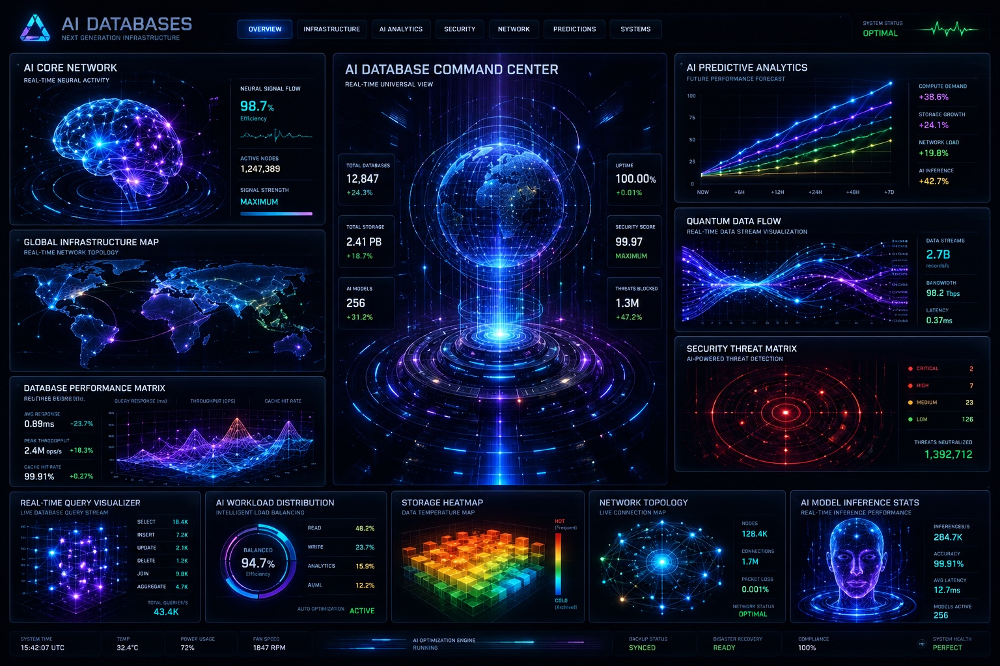

ENTER THE AI DATABASE COMMAND ROOM.
This is an interactive learning interface for understanding data centers, AI databases, compute, power, cooling, network topology, security, and the infrastructure layer behind artificial intelligence.

Overview: the AI database command layer.
AI databases and data centers work together like a planetary nervous system. Data is stored, processed, routed, secured, cooled, backed up, and analyzed through physical infrastructure that runs every hour of every day.
Infrastructure: the physical body of AI.
The cloud is not floating above us. It is inside facilities that combine real estate, electricity, cooling, fiber, hardware, software, security, and operations.
Power Spine
Utility feed, substations, transformers, switchgear, UPS batteries, generators, and rack distribution.
Cooling Loop
Air cooling, chilled water, liquid cooling, hot/cold aisle containment, and heat rejection.
Compute Fabric
Servers, GPUs, storage nodes, switches, routers, and orchestration software.
AI Analytics: where data becomes intelligence.
Analytics turns raw telemetry into decisions: load balancing, thermal optimization, anomaly detection, predictive maintenance, threat scoring, and cost control.
Security: protecting the digital nervous system.
AI infrastructure security includes physical access, cyber defense, identity controls, monitoring, anomaly detection, backups, encryption, and incident response.
Network: the signal web.
Fiber routes, carriers, private backbones, cloud regions, internet exchanges, and edge nodes move information across the AI economy.
Predictions: the next 20 years.
The next era of AI infrastructure will be shaped by power availability, liquid cooling, specialized AI factories, edge computing, autonomous operations, and energy partnerships.
Power bottleneck
Data-center growth becomes tied to grid capacity, substations, transmission, and permitting speed.
Liquid cooling mainstream
Dense AI racks push more facilities toward direct-to-chip and immersion cooling.
AI factories
Compute campuses become specialized industrial infrastructure for automation, robotics, and simulation.
Systems: how to learn this.
Use the tabs like a training simulator. Start with the infrastructure, then analytics, then security and networking. The goal is to understand the physical stack behind AI — not just the software.
Learn the physical stack
Power, cooling, fiber, servers, GPUs, storage, and facilities.
Understand the economics
Megawatts, uptime, density, site selection, and capital intensity.
Watch the AI trend
Inference, agents, autonomous systems, model training, and infrastructure scale.
Click to hear a short command-center explanation. Works in most modern browsers.